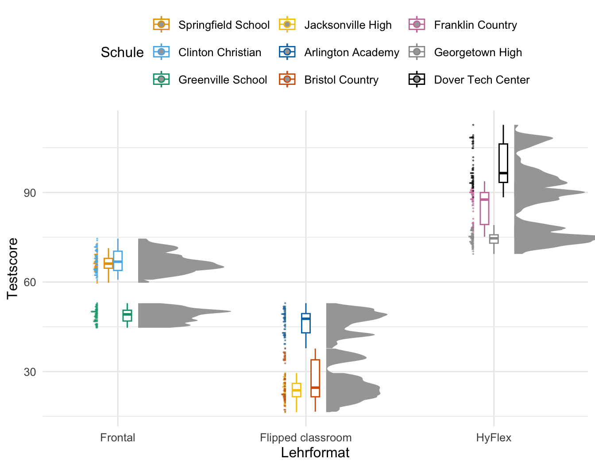
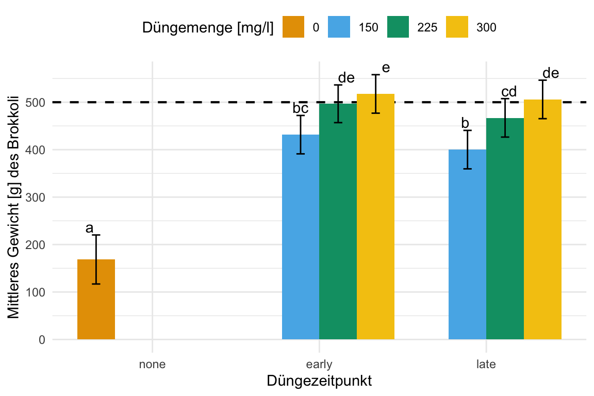

flowchart LR
C(Behandlungen):::fixed --- D(((nested))) --> E(Tische):::random --- F(((nested))) --> G(Gewächshäuser):::random
classDef fixed fill:#56B4E9,stroke:#333,stroke-width:0.75px
classDef random fill:#E69F00,stroke:#333,stroke-width:0.75px
49 Lineare gemischte Modelle
Letzte Änderung am 11. December 2023 um 21:18:19
“Wer die Arbeit kennt und sich nicht drückt, der ist verrückt.” — Tick, Trick und Track
In diesem Kapitel vollen wir die Grundzüge der lineare gemischten Modell (eng. linear mixed models, abk. lmm) zu versuchen zu verstehen. Wir immer, es gibt dazu auch hervorragende Literatur wie das sehr ausführliche Buch von Zuur u. a. (2009). Fangen wir also einmal an zu verstehen, wie eigentlich ein Experiment aussehen muss, damit wir ein lineares gemischtes Modell rechnen wollen. Wir haben häufig in den Agarwissenschaften Faktoren als unser \(x\) vorliegen. Für das \(y\) können aber jeden Messwert abbilden. Dafür gibt es dann die Funktion glmer(), die das Äquivalent zu der Funktion glm() ist. Wir haben also folgendes, mehrfaktorielles Modell vorliegen.
\[ y \sim f_1 + f_2 + z_1 + z_2 \]
Und eigentlich haben wir ja gar nicht vier gleichwertige Faktoren vorliegen, sondern meistens unsere Behandlungsfaktor \(f_1\) und \(f_2\) an dem wir interessiert sind und dann noch bis zu zwei weitere Faktoren \(z_1\) und \(z_2\), die eine weitere Gruppierung repräsentieren. Wir können auch noch mehr Faktoren vorliegen haben, aber ich empfehle ein Design immer auf maximal vier Faktoren zu begrenzen. Unsere beiden Faktoren \(z_1\) und \(z_2\) beschreiben jetzt aber nicht noch mehr Behandlungen sondern stellen ein Feld, einen Block oder aber einen Stall dar. Wir haben es also mit Faktoren für eine “Position” zu tun. Die Position kann auch eine zeitliche Komponente sein. Deshalb schreiben wir etwas allgemeiner für die Faktoren \(z_1\) und \(z_2\) auch als “zufällige” Effekte. Wie schon erwähnt es handelt sich nicht ausschließlich um Blöcke, es können auch andere Positionen in Raum und Zeit sein. Es geht immer mehr und manchmal braucht man auch mehr Faktoren, aber in unserem Kontext hier würde ich anraten sich auf eher auf drei Faktoren zu begrenzen. Also entweder zwei Behandlungsfaktoren \(f_1\) sowie \(f_2\) und ein Positionsfaktor \(z_1\) oder aber ein Behandlungsfaktor \(f_1\) und zwei Positionsfaktoren \(z_1\) sowie \(z_2\).
Als wäre das nicht kompliziert genug, haben wir meistens auch noch verschachtelte (eng. nested) Daten vorliegen. Damit meine ich, dass wir den Faktor \(z_1\) in jedem Level des Faktors \(z_2\) vorliegen haben. Wir können eben verschiedene Standorte als Faktor \(z_2\) betrachten und an jedem der Standorte haben wir Blöcke \(z_1\) vorliegen. Mehr dazu findest du dann auch in dem Kapitel Versuchsplanung in R und gleich nochmal weiter unten im Text.
Welche R Implementierung verwenden?
In diesem Kapitel werden wir nicht die Implementierung von linearen gemischten Modellen in dem R Paket {nlme} verwenden. Das Paket {nlme} hat sinnvolle Funktionen und je nach Fragestellung haben diese auch eine Berechtigung. Es gibt aber neuere R Pakete wie {lme4} oder {glmmTMB}, die wir dann hier in dem Kapitel nutzen wollen wenn es um statistsiche Analyse mit linearen gemischten Modellen geht..
Was ist nun das Besondere an einem linearen gemischten Modell? Wie der Name schon sagt, haben wir irgendwas gemischt. Glücklicherweise mischen wir nur zwei Dinge miteinander. Wir mischen hier feste Effekte (eng. fixed effect) und zufällige Effekte (eng. random effect) miteinander. Bis jetzt kennst du eigentlich nur feste Effekte. Immer wenn wir ein Modell gebaut haben, dann haben wir das Modell mit festen Effekten gebaut. Wir haben dabei Fakotoren als feste Effekte modelliert. Was ist also nun der Unterschied zwischen der Wahl einen Faktor als festen Effekt oder zufälligen Effekt anzusehen? Zuerst ist dies eine Modellierungsentscheidung. Wir müssen uns also zwischen Arten von Modellen unterscheiden. Daher können wir auch verschiedene Modelle mit unterschiedlichen Anzahlen an Faktoren bauen und dann diese Modelle vergleichen. Welcher Faktor jetzt als fester Effekt und welcher als zufälliger Effekt gilt, liegt dabei an uns.
Die Idee hinter dem Modell mit festen Effekten ist, dass die beobachteten Effektgrößen von Block zu Block variieren können, was aber nur auf den Varianz der Blöcke zurückzuführen ist. In Wirklichkeit sind die wahren Effektgrößen alle gleich: Sie sind fix. Alle Blöcke haben den gleichen Mittelwert und variieren nur in der Varianz. Wir sehen aber diesen wahren Mittelwert nicht, da sich alle Blöcke eben immer leicht unterscheiden. Mehr dazu auch in The Fixed-Effect Model)
Das Modell der zufälligen Effekte geht davon aus, dass es nicht nur eine wahre Effektgröße gibt, sondern eine Verteilung der wahren Effektgrößen. Jeder unserer Blöcke kann also einen anderen wahren Mittelwert haben. Das Ziel des Modells mit zufälligen Effekten ist es daher nicht, die eine wahre Effektgröße aller Blöcke zu schätzen, sondern den Mittelwert der Verteilung der wahren Effekte. Mehr dazu auch in The Random-Effect Model)
Dabei verbinden die gemischten Modelle die Vorteile eines Modells mit festen Effekt sowie eines Modells mit zufälligen Effekten. Lineare gemischte Modelle schätzen nun die subjektspezifischen Auswirkungen (eng. subject-specific) auf die Varianz eines Versuches. Dabei kommt es häufig darauf an unter welchen Umständen eine Beobachtung gemessen wurde. Stehen die Pflanze zusammen auf einem Feld? Sind die Ferkel alle Nachkommen einer Sau? Daher erweitern wir unser lineare Modell um einen zufälligen Effekt \(z\) und schreiben wie folgt.
\[ y \sim f_1 + 1|z_1 \]
Wir schreiben in R den Term für da zufällige Modell in der Form \(z_0|z_1\). Meist setzen wir den Intercept \(z_0\) für den zufälligen Effekt auf 1. Wenn wir darstellen wollen, das ein zufälliger Faktor in einem anderen zufälligen Fakotr genestet ist, dann schreiben wir 1|z_1/z_2.
\[ y \sim f_1 + 1|z_1/z_2 \]
Das heißt, dass der zufällige Blockfaktor \(z_1\) in den zufälligen Blockfaktor \(z_2\) genestet ist. Das klingt jetzt etwas schräg, also einmal ein Beispiel. Wir haben eine Schule, dann sind die Schulklassen dieser Schule in der Schule genestet. Es gibt diese spezifischen Klassen mit den Schülern schlichtweg nicht in anderen Schulen. Wir sagen genestet (eng. nested), wenn wir sagen wollen, dass ein Faktor in einen anderen Faktor verschränkt ist. Die Klassen einer Schule sind in der Schule genestet.
In der Abbildung 49.1 siehst du einmal exemplarisch die Darstellung eines experimentellen Designs mit drei Faktoren. Die Behandlung ist dabei ein fester Effekt und die beiden Faktoren für die Tische und die Gewächshäuser sind zufällige Effekte. Damit wir in der Folge nicht immer so sehr durcheinander kommen, habe ich die festen Effekt als blau Kästen und die zufälligen Effekte als orange Kästen gesetzt.
Okay, das ist jetzt bis hierher sehr abstrakt. Machen wir das mal konkret mit einem Beispiel mit drei Behandlungen gegen Blattläuse auf jeweils vier Tischen in drei Gewächshäusern. Pro Behandlung nehmen wir fünf Pflanzen. Damit ergibt sich folgendes Schema der Abhängigkeiten mit den jeweiligen Anzahlen.
\[ \overbrace{\mbox{Gewächshauser}}^{n_g = 3} \xrightarrow[alle]{beinhaltet} \underbrace{\mbox{Tische}}_{n_t = 4} \xrightarrow[alle]{beinhaltet} \overbrace{\mbox{Behandlungen}}^{n_b = 3} \xrightarrow[alle]{beinhaltet} \underbrace{\mbox{Beobachtungen}}_{n_w = 5} \]
Wie du an dem obigen Beispiel sehen kannst, kommen wir bei linearen gemischten Modellen sehr schnell auf sehr große Fallzahlen. Wir haben im obigen, kleinen Beispiel alleine schon eine Fallzahl von \(n_{gesamt} = 3 \times 4 \times 3 \times 5 = 180\) Pflanzen. Und damit ist eigentlich unser Beispiel sehr klein gewählt. Eigentlich brauchen wir für einen zufälligen Effekt als Daumenregel immer mehr als fünf Level für eine gute Modellschätzung.
Weitere Tutorien zu gemischten Modellen
Wie immer und natürlich im Besonderen bei linearen gemischten Modellen, gibt es eine Reihe von tollen Hilfen. Daher hier einmal eine lose Sammlung an Ideen und Tutorien, die mir geholfen haben dieses Kapitel hier zu schreiben. Fast jede Quelle hat dann nochmal Referezen zu weiteren Informationen und Hilfen.
- GLMM FAQ – Ben Bolker and others ist meine Anlaufstelle, wenn ich mal was nachlesen muss. Eine sehr hilfreiche und umfangreiche Sammlung.
- Mixed Models with R – Getting started with random effects ist ein freies Buch, was ich auch immer mal wieder anschaue, wenn ich Fragen rund um das gemischte Modell habe. Dies ist hier nur ein Kapitel mit einer Zusammenfassung und eben kein ganzes Buch.
- Teile dieses Kapitel auf dem tollen Tutorium von Gabriela K Hajduk. Die Daten und Inhalte wurden von mir teilweise gekürzt sowie inhaltlich angepasst. Auch hier findest du sehr viel mehr Informationen und dann auch Links zu weiteren Quellen.
- Ideen und weitere Erklärungen sind auch beim Tutorium von Sara Stoudt zu finden. Hier musst du dich aber mehr Einarbeiten, da der Artikel etwas mehr mathematisch aufgebaut ist.
- Als weiteres Tutorium für die Auswertung von linearen gemischten Modellen und allgemein dem Modellieren von agarwissenschaftlichen Daten kann ich die Seite Data Science for Agriculture in R sehr empfehlen. Dort findest du dann auch die Abwendung der R Pakete aus diesem Kapitel. Und natürlich die verwandte Seite Mixed Models for Agriculture in R auf der gerade viele Beispiele gesammelt werden. Ein Großteil ist aber noch under construction (Stand Ende 2023).
- Introduction to
{broom.mixed}hilft dabei die Ausgaben der verschiedenen R Pakte, die es zu gemischten Modellen gibt zu vereinheitlichen. Wir erhalten dann immer die gleichetidy()-Ausgabe und nicht immer was anderes von den Funktionen wiedergegeben. - Linear Models and Mixed Models with R sind zwei PDF Dateien von Winter (2013) in denen er nochmal sehr schön erklärt wie lineare gemischte Modelle in R funktionieren.
49.1 Genutzte R Pakete
Wir wollen folgende R Pakete in diesem Kapitel nutzen.
pacman::p_load(tidyverse, magrittr, broom, see, simstudy,
multcomp, emmeans, lme4, broom.mixed, readxl,
parameters, ggridges, scales, performance,
ggdist, gghalves, systemfonts, glmmTMB, lmerTest,
multilevelmod, conflicted)
conflict_prefer("select", "dplyr")
conflict_prefer("filter", "dplyr")
conflicts_prefer(lme4::lmer)
cbbPalette <- c("#000000", "#E69F00", "#56B4E9", "#009E73",
"#F0E442", "#0072B2", "#D55E00", "#CC79A7")
theme_set(theme_minimal(base_size = 12))Am Ende des Kapitels findest du nochmal den gesamten R Code in einem Rutsch zum selber durchführen oder aber kopieren.
49.2 Daten
Als erstes Beispiel nehmen wir einen Datensatz zu den Testergebnissen von Schülern an amerikanischen Schulen. Jetzt ist das kein Beispiel, welches du vielleicht in einem biologischen oder agrarwissenschaftlichen Umfeld erwarten würdest. Ich mache das aber hier bewusst, da wir uns alle sehr gut die Abhängigkeiten von Schülerleistungen von der jeweiligen Klasse und dem Standort der Schule vorstellen können. Jedem wird klar sein, dass ein Testergebnis aus einer Klausur nicht unabhängig davon ist, auf welche Schule der Schüler geht oder in welcher Klasse er unterrichtet wird. Schüler in einer gemeinsamen Klasse oder Schule werden sich ähnlicher sein als Schüler in unterschiedlichen Klassen oder Schulen.
In der Abbildung 49.2 siehst du einmal das Abhängigkeitsverhältnis in unserem Schuldatenbeispiel. Wir wenden in den verschiedenen Klassen als Behandlung trt eines von drei Lehrmethoden Frontal, Flipped Classroom oder HyperFlex an. Dabei wird natürlich eine ganze Klasse nach der entsprechenden Lehrmethode unterrichtet. Pro Schule finden sich drei Klassen und eine Klasse ist dann in einer der neun Schulen genestet.
flowchart LR
C(trt):::fixed --- D(((nested))) --> E(class):::random --- F(((nested))) --> G(school):::random
classDef fixed fill:#56B4E9,stroke:#333,stroke-width:0.75px
classDef random fill:#E69F00,stroke:#333,stroke-width:0.75px
school und Klassen class mit zwei innovativen Lehrmethoden unterrichtet. Eine Kontrollgruppe soll die Ergebnisse eines Leistungstests absichern. Daher sind die Lehrmethoden trt in dem Faktor class genestet. Der Faktor class ist dann wiederum in jedem Faktor school genestet.In dem folgenden Kasten werden einmal die Schuldaten simuliert. Daher können wir dann einmal nachvollziehen, welche Werte wir jeweils für die Effekte der Schule, der Klasse und der Lehrform gesetzt haben. Du kannst den Kasten gerne überspringen und dann einfach mit der Visualisierung und Auswertung der Daten weitermachen.
Generierung von Schuldaten (3-faktoriell)
Warum sollte man Daten simulieren? Reichen da nicht echte Daten? Wir können an den simulierten Daten die Werte zurückverfolgen, wir wir bei der Erstellung voreingestellt haben. Damit können wir dann auch bewerten, wie gut die statistischen Methoden funktioniert haben. Wir machen es uns aber auch etwas einfacher und bauen uns kein kompliziertes Beispiel. Umfangreich ist es nur, da Daten für ein gemischtes Modell eben auch umfangreich sind.
Aus Gründen der Einfachheit haben wir immer ein balanciertes Design vorliegen. Wir haben also immer in allen Faktorkombinationen die gleiche Anzahl an Beobachtungen n_reps vorliegen. In der Anwendung mag es Unterschiede geben, so hat eine Sau sicherlich nicht immer exakt zwölf Ferkel, aber in unseren Beispielen macht es keinen Unterschied. Balanciert oder unbalanciert ist bei gemischten Modellen eher nachrangig wichtig. Das R Paket {simstudy} erlaubt die Simulation von komplexeren Gruppenstrukturen mit auch unbalancierten Daten.
Im Folgenden setze ich einmal Werte für die Schulanzahl, Klassenzahl pro Schule sowie die Anzahl an Behandlungen. Dann müssen wir noch definieren wie viele Schüler dann pro Klasse zu finden sind. Wenn wir das haben, dann können wir auch die Effekte der Klassen, Schulen und der Lehrformate festlegen. Dabei sind die Effekt der zufälligen Effekte der Klassen und Schule dann die zusätzliche Varianz abgebildet durch die Standardabweichungen.
# set seed
set.seed(20231208)
# sample sizes
n_school <- 9
n_class_per_school <- 3
n_class <- n_school * n_class_per_school
n_trt <- 3
n_reps <- 20
# effects and standard deviation
sd_school <- 10
sd_class <- 5
sd_error <- 2
eff_trt <- c(frontal = 10,
flipped = -10,
hyflex = 30)Dann können wir uns schon das Grid für die Daten erstellen. Dabei müssen wir dann mehrfach expand_grid() nutzen um erst die Schulen zu erschaffen, dann die Lehrformate den Schulen zuordnen und dann die Klassen pro Schule erschaffen. Ende müssen wir noch den Datensatz mit der Anzahl an Schülern pro Klasse erweitern. Dann beschreibt jede Zeile genau einen Schüler. Neben der Zuordnung jedes einzelnen Schülern zu einem Lehrformat, Klasse und Schule, müssen wir noch die Effekte \(s_0\), \(c_0\) und \(t_{eff}\), die jeder Schüler durch eben jene Zuordnung erhält, ergänzen.
school_grid_tbl <- tibble(s_id = 1:n_school,
s_0 = rnorm(n_school, 0, sd_school)) %>%
add_column(trt = rep(1:n_trt, n_trt),
t_eff = rep(eff_trt, n_trt)) %>%
expand_grid(c_per_s = 1:n_class_per_school) %>%
mutate(c_id = 1:n_class,
c_0 = rnorm(n_class, 0, sd_class)) %>%
expand_grid(reps = 1:n_reps)Jetzt können wir unseren Testscore berechnen, der sich aus den einzelnen Effekten der Schule \(s_0\), der Klasse \(c_0\) sowie dem Lehrformat \(t_{eff}\) ergibt, berechnen. Am Ende addieren wir auf jeden Wert noch einen Fehler und runden die Werte des Tests auf zwei Stellen. Dann bauen wir uns noch die Faktorlevel für die Schulen, Klassen und dem Lehrformat.
school_tbl <- school_grid_tbl %>%
arrange(trt) %>%
mutate(test = round(50 + s_0 + c_0 + t_eff + rnorm(n(), 0, sd_error), 2),
s_id = factor(s_id, labels = c("Springfield School", "Jacksonville High", "Franklin Country",
"Clinton Christian", "Arlington Academy", "Georgetown High",
"Greenville School", "Bristol Country", "Dover Tech Center")),
c_id = as_factor(c_id),
c_per_s = factor(c_per_s, labels = c("1a", "1b", "1c")),
trt = factor(trt, labels = c("Frontal", "Flipped classroom", "HyFlex"))) Dann schreiben wir die Daten noch in eine Exceldatei school_testing.xlsx und können diese dann im weiteren Verlauf der Analyse nutzen. Auch hier passen wir etwas die Namen der Spalten an, damit die Spalten etwas mehr Aussagekraft haben.
school_tbl %>%
select(school_id = s_id, class_in_school_id = c_per_s, class_id = c_id, trt, test) %>%
write_xlsx("data/school_testing.xlsx")Die Schuldaten liegen dann in dem Datensatz school_testing.xlsx vor. Wir müssen hier dann nur noch die Faktoren bilden, damit wir dann auch die Visualisierungen sauber hinkriegen.
school_tbl <- read_excel("data/school_testing.xlsx") %>%
mutate(school_id = as_factor(school_id),
class_in_school_id = as_factor(class_in_school_id),
class_id = as_factor(class_id),
trt = as_factor(trt)) Es ergibt sich dann der Datensatz der Schuldaten wie in Tabelle 49.1 gekürzt gezeigt.
| school_id | class_in_school_id | class_id | trt | test |
|---|---|---|---|---|
| Springfield School | 1a | 1 | Frontal | 59.75 |
| Springfield School | 1a | 1 | Frontal | 60.29 |
| Springfield School | 1a | 1 | Frontal | 63.43 |
| Springfield School | 1a | 1 | Frontal | 65.36 |
| … | … | … | … | … |
| Dover Tech Center | 1c | 27 | HyFlex | 107.29 |
| Dover Tech Center | 1c | 27 | HyFlex | 108.62 |
| Dover Tech Center | 1c | 27 | HyFlex | 107 |
| Dover Tech Center | 1c | 27 | HyFlex | 108.52 |
In der Tabelle 49.2 im folgenden Kasten findest du den einfachst möglichen Datensatz für nur zwei Schülern pro Klasse sowie insgesamt nur zwei Klassen für zwei Schulen. Damit kannst du dir einmal denn Aufbau visualisieren und siehst auch einmal wie sich die Effekte der Klassen, Schule und Lehrformat für jeden der sechzehn Schüler zusammensetzt. Jede Zeile repräsentiert ja einen Schüler.
Einfachst möglicher Schuldatensatz (3-faktoriell)
| school | \(\boldsymbol{eff_{school}}\) | class | \(\boldsymbol{eff_{class}}\) | trt | \(\boldsymbol{eff_{trt}}\) | reps |
|---|---|---|---|---|---|---|
| 1 | \(0.23\) | 1 | \(-0.14\) | 1 | \(10\) | 1 |
| 1 | \(0.23\) | 1 | \(-0.14\) | 1 | \(10\) | 2 |
| 1 | \(0.23\) | 1 | \(-0.14\) | 2 | \(5\) | 1 |
| 1 | \(0.23\) | 1 | \(-0.14\) | 2 | \(5\) | 2 |
| 1 | \(0.23\) | 2 | \(0.21\) | 1 | \(10\) | 1 |
| 1 | \(0.23\) | 2 | \(0.21\) | 1 | \(10\) | 2 |
| 1 | \(0.23\) | 2 | \(0.21\) | 2 | \(5\) | 1 |
| 1 | \(0.23\) | 2 | \(0.21\) | 2 | \(5\) | 2 |
| 2 | \(0.71\) | 3 | \(-0.83\) | 1 | \(10\) | 1 |
| 2 | \(0.71\) | 3 | \(-0.83\) | 1 | \(10\) | 2 |
| 2 | \(0.71\) | 3 | \(-0.83\) | 2 | \(5\) | 1 |
| 2 | \(0.71\) | 3 | \(-0.83\) | 2 | \(5\) | 2 |
| 2 | \(0.71\) | 4 | \(0.59\) | 1 | \(10\) | 1 |
| 2 | \(0.71\) | 4 | \(0.59\) | 1 | \(10\) | 2 |
| 2 | \(0.71\) | 4 | \(0.59\) | 2 | \(5\) | 1 |
| 2 | \(0.71\) | 4 | \(0.59\) | 2 | \(5\) | 2 |
In der folgenden Box findest du noch mehr Daten und experimentelle Designs aus dem R Paket {agridat}. Dort findest du dann noch mehr Inspirationen wie Daten aussehen könnten, die mit einem linearen gemischten Modell ausgewertet werden.
Mehr Daten zu gemischten Modellen
Alle Daten hier stammen aus dem R Paket {agridat} und lassen sich somit mit der Funktion data() laden. Die Daten liegen meistens nicht als tibble() vor, so dass manchmal noch etwas Datenaufbereitung notwendig ist.
- Mating crosses of chickens
- Latin square of four breeds of sheep with four diets
- Birth weight of lambs from different lines/sires
- Weight gain calves in a feedlot
- Average daily gain of 65 steers for 3 lines, 9 sires.
- Multi-environment trial of oats in United States, 5 locations, 7 years.
glmer()Wireworms controlled by fumigants in a latin square
49.3 Visualisierung
ggplot(school_tbl, aes(x = trt, y = test, color = school_id)) +
stat_halfeye(adjust = 0.5, width = 0.4, .width = 0,
justification = -0.3, point_colour = NA) +
geom_boxplot(width = 0.15, outlier.shape = NA) +
stat_dots(side = "left", justification = 1.12, binwidth = .25) +
coord_cartesian(xlim = c(1.2, 2.9), clip = "off") +
labs(x = "", y = "Testscore", color = "Schule") +
scale_color_okabeito() +
theme(legend.position = "top") +
guides(color=guide_legend(nrow = 3, byrow = FALSE))
ggplot(school_tbl, aes(x = trt, y = test, color = class_in_school_id)) +
stat_halfeye(adjust = 0.5, width = 0.4, .width = 0,
justification = -0.3, point_colour = NA) +
geom_boxplot(width = 0.15, outlier.shape = NA) +
stat_dots(side = "left", justification = 1.12, binwidth = .25) +
coord_cartesian(xlim = c(1.2, 2.9), clip = "off") +
labs(x = "", y = "Testscore", color = "Lehrformat") +
scale_color_okabeito() +
theme(legend.position = "top")
ggplot(school_tbl, aes(x = class_id, y = test, fill = trt)) +
geom_boxplot(outlier.size = 0.5) +
labs(x = "Individuelle Klassen ID", y = "Testscore", fill = "Lehrformat") +
scale_fill_okabeito() +
theme(legend.position = "top")
Bevor wir mit dem Modellieren beginnen, wollen wir erstmal visuell überprüfen, ob unser Outcome \(y\) mit dem Testscore auch normalverteilt ist. Wir benötigen für das klassische lineare gemischte Modell ein normalverteiltes Outcome \(y\). In Abbildung 49.6 sehen wir das Histogramm der Verteilung des Testscores für alle \(N = 480\) Drachen.
dragons_tbl <- read_excel("data/dragons.xlsx") %>%
mutate(body_length_cat = as_factor(body_length_cat),
mountain = as_factor(mountain),
site = factor(site, labels = c("north", "east", "south"))) ggplot(dragons_tbl, aes(x = body_length_cat, y = test_score, color = mountain)) +
stat_halfeye(adjust = 0.5, width = 0.4, .width = 0,
justification = -0.3, point_colour = NA) +
geom_boxplot(width = 0.15, outlier.shape = NA,
position = position_dodge(preserve = "single")) +
stat_dots(side = "left", justification = 1.12, binwidth = .25) +
coord_cartesian(xlim = c(1.2, 2.9), clip = "off") +
labs(x = "", y = "Testscore", color = "Berg") +
scale_color_okabeito() +
theme(legend.position = "top")
ggplot(dragons_tbl, aes(x = body_length_cat, y = test_score, color = site)) +
stat_halfeye(adjust = 0.5, width = 0.4, .width = 0,
justification = -0.3, point_colour = NA) +
geom_boxplot(width = 0.15, outlier.shape = NA,
position = position_dodge(preserve = "single")) +
stat_dots(side = "left", justification = 1.12, binwidth = .25) +
coord_cartesian(xlim = c(1.2, 4.9), clip = "off") +
labs(x = "", y = "Testscore", color = "Berg") +
scale_color_okabeito() +
theme(legend.position = "top")
Wir können in der Abbildung 49.7 auch nochmal schauen, ob die Annahme der annährenden Normalverteilung für unseren Testscore auch für jedes Level unseres Faktors der Körperlängen gegeben ist. Wir sehen auch hier, dass der Testscore einer Normalverteilung über alle Kategorien der Körperlänge folgt.
49.4 Modellierung
Mindestanzahl an Leveln für einen zufälligen Effekt
Wir brauchen mindestens 5 bis 6 Level für einen Faktor, den wir als zufälligen Effekt deklarieren. Das würde hier aber leider die Beispiele sehr komplex machen… deshalb hier mit weniger Leveln und dafür dann nicht so guten Ergebnissen.
Bates u. a. (2014) hat das R Paket {lme4} entwickelt, welches uns erlaubt lineare gemischte Modelle in R anzuwenden. Es gibt noch das ältere R Paket {nlme} was aber nicht mehr für lineare gemischte Modelle genutzt wird. Wir nutzen aber gerne die Funktion gls() aus dem R Paket {nlme}, wenn wir eine lineare Regression mit heterogenen Varianzen rechnen wollen.
R Paket {glmmTMB} und dann noch Covariance structures with glmmTMB
| Formula | Bedeutung |
|---|---|
| \((1\; |\; g)\) | Zufälliger \(y\)-Achsenabschnitt mit festen Mittelwert (eng. Random intercept with fixed mean) |
| \((1\; |\; g_1/g_2)\) | Der \(y\)-Achsenabschnitt variiert in \(g_1\) und \(g_2\) innerhalb von \(g_1\) (eng. Intercept varying among g1 and g2 within g1) |
| \((1\; |\; g_1) + (1\; |\; g_2)\) | Der \(y\)-Achsenabschnitt variiert zwischen \(g_1\) und \(g_2\) (eng. Intercept varying among g1 and g2) |
| \(x + (x\; |\; g)\) | Korrelierter zufälliger \(y\)-Achsenabschnitt und Steigung (eng. Correlated random intercept and slope) |
| \(x + (x\; ||\; g)\) | Unkorrelierter zufälliger \(y\)-Achsenabschnitt und Steigung (eng. Uncorrelated random intercept and slope) |
49.4.1 Mitteln über die einzelnen Beobachtungen
Wir mitteln über den Block oder der Klasse
Bevor wir jetzt mit dem Modellieren beginnen, müssen wir noch kurz in einem QQ-Plot schauen, ob unser Ourcome testscore auch ungefähr normalverteilt ist. Abbildung 49.8 zeigt den QQ-Plot des Testscores. Wir sehen, dass der Hauptteil der Beobachtungen auf der Geraden liegt und wir nehmen daher an, dass der Testscore zumindest approximativ normalverteilt ist. Wir können also mit einem gaussian linearen gemischten Modell weitermachen.
ggplot(dragons_tbl, aes(sample = test_score)) +
stat_qq() + stat_qq_line(color = "red") +
theme_bw() +
scale_color_okabeito()
Schauen wir uns nun als erstes das Modell lm_simple_fit einmal an. Wir bauen das Modell nur mit der Faktorvariable body_length_cat. Wir erhalten dann gleich die Ausgabe des Modells über die Funktion model_parameters() in einer aufgearbeiteten Form.
lm_simple_fit <- lm(test_score ~ body_length_cat, data = dragons_tbl)
lm_simple_fit %>% model_parameters()Parameter | Coefficient | SE | 95% CI | t(475) | p
----------------------------------------------------------------------------------
(Intercept) | 24.61 | 4.33 | [16.10, 33.12] | 5.68 | < .001
body length cat [small] | 2.63 | 5.39 | [-7.96, 13.21] | 0.49 | 0.626
body length cat [medium] | 24.89 | 4.68 | [15.70, 34.07] | 5.32 | < .001
body length cat [large] | 32.50 | 4.55 | [23.56, 41.43] | 7.15 | < .001
body length cat [gigantic] | 29.32 | 5.20 | [19.10, 39.54] | 5.64 | < .001Der Intercept beinhaltet den Mittelwert für die Drachen des Levels [tiny]. Die jeweiligen Koeffizienten dann die Abweichung von den Drachen des Levels [tiny]. Daher sind Drachen des Levels [small] ungefähr um \(2.63\) Einheiten intelligenter. Wir sehen dann an dem \(p\)-Wert, ob sich die Koeffizienten signifikant von 0 unterscheiden. In Abbildung 49.9 sehen wir nochmal die Boxplots der einzelnen Testscores aufgeteilt nach der Körpergröße. Wir erkennen, dass die kleineren Drachen tendenziell dümmer sind als die großen Drachen. Wir sehen zwei Plateaus.
ggplot(dragons_tbl, aes(x = body_length_cat, y = test_score, fill = body_length_cat)) +
theme_bw() +
geom_boxplot() +
theme(legend.position = "none") +
scale_fill_okabeito() 
Nun haben wir aber nicht nur die Körpergrößen gemessen sondern auch auf welchem Berg wir die jeweiligen Drachen gefunden haben. Nun könnte es sein, dass der Berg einen viel größeren Einfluss auf die Inteliegenz hat als die Drachenkörpergröße. Wir könnten einen Confoundereffekt durch die Berge vorliegen haben. Ergänzen wir also das Modell um den Faktor mountain und erhalten das Modell lm_mountain_fit.
lm_mountain_fit <- lm(test_score ~ body_length_cat + mountain, data = dragons_tbl)
lm_mountain_fit %>% model_parameters()Parameter | Coefficient | SE | 95% CI | t(468) | p
----------------------------------------------------------------------------------
(Intercept) | 20.93 | 3.34 | [14.36, 27.49] | 6.27 | < .001
body length cat [small] | 1.67 | 3.89 | [-5.98, 9.32] | 0.43 | 0.668
body length cat [medium] | 3.55 | 3.72 | [-3.76, 10.85] | 0.95 | 0.341
body length cat [large] | 3.59 | 4.30 | [-4.86, 12.03] | 0.83 | 0.405
body length cat [gigantic] | 0.08 | 4.85 | [-9.45, 9.60] | 0.02 | 0.988
mountain [Ligurian] | 17.33 | 3.58 | [10.28, 24.37] | 4.83 | < .001
mountain [Emmental] | 15.91 | 3.63 | [ 8.79, 23.04] | 4.39 | < .001
mountain [Central] | 35.62 | 3.69 | [28.36, 42.88] | 9.64 | < .001
mountain [Maritime] | 48.75 | 3.24 | [42.39, 55.11] | 15.06 | < .001
mountain [Southern] | 8.47 | 2.74 | [ 3.08, 13.85] | 3.09 | 0.002
mountain [Julian] | 45.74 | 3.86 | [38.15, 53.33] | 11.85 | < .001
mountain [Sarntal] | 41.03 | 3.30 | [34.54, 47.53] | 12.42 | < .001Wie wir sehen, werden nun die Körpergrößen der Drachen nicht mehr als signifikant ausgegeben. Die Effekte der Körpergröße auf den Testscore sind auch viel kleiner geworden, wenn wir die mountain mit in das Modell nehmen. Anscheinend hat der Berg auf dem wir den Drachen getroffen haben einen viel größeren Einfluss auf die Intelligenz als die Körpergröße. Wir können uns den Zusammenhang zwischen dem Testscore und dem Berg auch in der Abbildung 49.10 einmal anschauen.
Eigentlich würden wir erwarten, dass es keinen Effekt der Berge auf den Testscore der Drachen gibt. Es müsste eigentlich egal sein, wo wir einen Drachen befragen, wenn wir nur an der Körpergröße und dem Testscore interessiert sind. Wir sehen jedoch in der Abbildung 49.10 einen klaren Unterschied zwischen den Bergen im Bezug auf den Testscore.
ggplot(dragons_tbl, aes(mountain, test_score, fill = mountain)) +
geom_boxplot() +
theme_bw() +
theme(legend.position = "none") +
scale_fill_okabeito()
In der Abbildung 49.11 sehen wir den Zusammenhang von Testscore und der Körpergröße sowie den Bergen auf denen das Interview stattgefunden hat. so langsam dämmert uns warum wir hier einen Effekt der Körperlänge zu dem Testscore sehen. Die kleineren Drache sind alle nur auf bestimmten Bergen zu finden! Betrachten wir die Berge mit in dem Modell, dann hat die Körpergröße keinen Einfluß mehr.
ggplot(dragons_tbl, aes(x = body_length_cat, y = test_score, fill = mountain)) +
geom_boxplot(position = position_dodge(preserve = "single")) +
theme_bw() +
scale_fill_okabeito() +
labs(fill = "Mountain")
Der Zusammenhang wird vielleicht in Abbildung 49.12 nochmal klarer. Hier schauen wir uns den Zusamenhang wieder für die Körperlänge getrennt für die Berge an. Nur zeichnen wir jetzt jeden einzelnen Berg in ein Subplot. Wir sehen, dass es hier fast keinen Unterschied macht, wie lang die Drachen sind. Der Testscore ist immer gleich. Was einen Unterschied macht, sind die Berge.
ggplot(dragons_tbl, aes(x = body_length_cat, y = test_score, fill = mountain)) +
geom_boxplot(position = position_dodge(preserve = "single")) +
theme_bw() +
scale_fill_okabeito() +
labs(fill = "Mountain") +
theme(legend.position = "none") +
facet_wrap(~ mountain) 
Schauen wir uns nun einmal ein lineares gemischtes Modell an. Wir nutzen daszu das R Paket {lme4}. Wir haben auch noch andere Pakete zur Aswahl, aber wir nutzen hier erstmal das gängiste Paket. Um ein lineares gemischtes Modell in R zu schätzen nutzen wir die Funktion lmer(). Die Funktion lmer() nimmt an, dass das Outcome test_score normalverteilt ist. Wir haben diese Annahme ja weiter oben in dem QQ-Plot überprüft.
In einem lineare gemischten Modell müssen wir die festen Effekte sowie die zufälligen Effekte definieren. Die festen Effekte werden ganz normal wie wir es gewohnt sind in das Modell eingegeben. Die zufälligen Effkete schreiben wir in eine Klammer in der Form (1|).
Wir schreiben (1|moutain_range) und definieren damit die Variable mountain als zufälligen Effekt im Modell. Wir schreiben 1| vor mountain, da wir für jeden Berg die gleiche Steigung von Körperlänge und Testscore annehmen. Wir können dann später noch das Model komplizierter aufbauen und jedem Berg eine eigene Steigung erlauben. Bauen wir uns jetzt erstmal ein lineares gemischtes Modell mit einem festen Effekt body_length_cat und einem zufälligen Effekt (1|mountain).
lmer_1_fit <- lmer(test_score ~ body_length_cat + (1 | mountain), data = dragons_tbl)
lmer_1_fit %>% model_parameters()# Fixed Effects
Parameter | Coefficient | SE | 95% CI | t(473) | p
----------------------------------------------------------------------------------
(Intercept) | 46.85 | 7.43 | [32.25, 61.45] | 6.30 | < .001
body length cat [small] | 1.68 | 3.89 | [-5.97, 9.33] | 0.43 | 0.666
body length cat [medium] | 4.08 | 3.71 | [-3.20, 11.37] | 1.10 | 0.271
body length cat [large] | 4.49 | 4.27 | [-3.90, 12.88] | 1.05 | 0.293
body length cat [gigantic] | 1.03 | 4.81 | [-8.43, 10.49] | 0.21 | 0.831
# Random Effects
Parameter | Coefficient
--------------------------------------
SD (Intercept: mountain) | 18.21
SD (Residual) | 14.96Unser Model sieht etwas aufgeräumter aus. Als feste Effekte haben wir nur noch die Körperlänge body_length_cat und die dazugehörigen Koeffizienten des Modells. Unsere Variable mountain verschwindet dann in den zufälligen Effekten. Die Funktion summary liefert uns den gesamten Ausdruck, der etwas überwältigend ist. Vieles brauchen wir auch nicht davon.
lmer_1_fit %>% summary()
Was wir extrahieren wollen ist die Information von den zufälligen Effekten. Wir wollen wissen, wieviel Varianz durch die zufälligen Effekte erklärt wird. Wir nutzen dazu die Funktion VarCorr(), die uns erlaubt die Information zu en zufälligen Effekten zu extrahieren und auszugeben.
print(VarCorr(lmer_1_fit), comp = "Variance") Groups Name Variance
mountain (Intercept) 331.42
Residual 223.83 Wieviel Varianz erklären nun die Berge? Wir können die erklärte Varianz der zufälligen Effekte einfach berechnen. Wir vergleichen die erklärte Varianz von mountain mit der gesamten Varianz. Die gesamte Varianz ist die Varianz aller zufälligen Effekte plus der residualen Varianz. Wir erhalten dann \(R^2_{random} = 339.7/(339.7 + 223.8) \approx 0.60\). Wir sehen, dass ca. 60% der Varianz in unseren Daten von der Variable mountain verursacht wird.
Wir können die Funktion model_performance() nutzen um mehr über den Fit des Modells zu erfahren. Das R2 (cond.) ist faktisch das gleiche wie wir gerade oben berechnet haben. Wir benötigen also nicht immer den Ausdruck der zufälligen Effekte. Wir können auch die Informationen aus der Funktion model_performance() nehmen.
lmer_1_fit %>% model_performance()# Indices of model performance
AIC | AICc | BIC | R2 (cond.) | R2 (marg.) | ICC | RMSE | Sigma
----------------------------------------------------------------------------------
3983.403 | 3983.640 | 4012.620 | 0.598 | 0.004 | 0.597 | 14.774 | 14.961In der Abbildung Abbildung 49.13 schauen wir uns nochmal an, ob wir das Modell auch gut gefittet haben. Der Residualplot sieht gut aus, wir erkennen kein Muster. Ebenso sieht der QQ-Plot gut aus, die Beobachtungen liegen alle auf der Geraden. Wir sind mit dem Modell soweit erstmal ganz zufrieden.


Wir haben noch eine Variable in unseren Daten ignoriert. Wir haben uns bis jetzt nicht die Variabl site angeschaut. Auf jedem Berg haben wir die Drachen noch auf verschiedenen Flanken des Berges site befragt. Das heißt, wir haben die Variable site, die in der Variable mountain_site genestet ist. Wir schreiben daher ein neues Modell und nutzen die Schreibweise (1|mountain/site) um zu beschreiben, dass site immer zusamen in einem Berg vorkommt. Schaue dir dazu nochmal die Abbidlung ganz zu Beginn dieses Kapitels an um die Zusammenhänge nochmal visualisiert zu bekommen.
lmer_2_fit <- lmer(test_score ~ body_length_cat + (1|mountain/site), data = dragons_tbl)
lmer_2_fit %>% model_parameters()# Fixed Effects
Parameter | Coefficient | SE | 95% CI | t(472) | p
-----------------------------------------------------------------------------------
(Intercept) | 46.89 | 7.80 | [ 31.56, 62.22] | 6.01 | < .001
body length cat [small] | 1.32 | 3.99 | [ -6.51, 9.16] | 0.33 | 0.740
body length cat [medium] | 3.34 | 4.61 | [ -5.73, 12.41] | 0.72 | 0.470
body length cat [large] | 4.85 | 5.15 | [ -5.26, 14.97] | 0.94 | 0.346
body length cat [gigantic] | 1.37 | 5.83 | [-10.08, 12.83] | 0.24 | 0.814
# Random Effects
Parameter | Coefficient
-------------------------------------------
SD (Intercept: site:mountain) | 4.79
SD (Intercept: mountain) | 17.88
SD (Residual) | 14.46Das Modell hat nun einen weiteren zufälligen Effekt. Es werden jetzt auch nochmal für jeden Berg die Flankeneffekte mit berücksichtigt. Hat das überhaupt einen Einfluss auf das Modell? Schauen wir uns einmal die Modellgüte mit der Funktion model_performance() an.
lmer_2_fit %>% model_performance()# Indices of model performance
AIC | AICc | BIC | R2 (cond.) | R2 (marg.) | ICC | RMSE | Sigma
----------------------------------------------------------------------------------
3970.693 | 3970.999 | 4004.084 | 0.623 | 0.004 | 0.621 | 14.120 | 14.460Wir sehen, dass sich die erklärte varianz leicht erhöht hat. Die \(R^2_{random}\) liegt jetzt bei \(0.623\) also fast 62%. Etwas besser als vorher, aber auch nicht unbedingt sehr viel mehr.
Wie können wir nun unsere vier Modelle miteinander vergleichen? Wir haben ja folgende Modelle vorliegen:
- Das simple lineare Modell
lm_simple_fitmittest_score ~ body_length_cat. - Das multiple lineare Modell
lm_mountain_fitmittest_score ~ body_length_cat + mountain. - Das gemischte lineare Modell
lmer_1_fitmittest_score ~ body_length_cat + (1|mountin_range). - Das genestete gemischte lineare Modell
lmer_2_fitmittest_score ~ body_length_cat + (1|mountain/site).
Um die Modelle miteinander zu vergleichen können wir die Funktion compare_performance() nutzen. Wir erhalten mit der Option rank = TRUE auch eine Sortierung der Modelle wieder. Das beste Modell steht dann ganz oben.
compare_performance(lm_simple_fit, lm_mountain_fit, lmer_1_fit, lmer_2_fit, rank = TRUE)# Comparison of Model Performance Indices
Name | Model | RMSE | Sigma | AIC weights | AICc weights | BIC weights | Performance-Score
----------------------------------------------------------------------------------------------------------
lm_mountain_fit | lm | 14.772 | 14.960 | 1.000 | 1.000 | 0.330 | 86.49%
lmer_2_fit | lmerMod | 14.120 | 14.460 | 5.84e-05 | 7.41e-05 | 0.655 | 60.00%
lmer_1_fit | lmerMod | 14.774 | 14.961 | 1.72e-07 | 2.26e-07 | 0.016 | 36.89%
lm_simple_fit | lm | 20.661 | 20.770 | 1.24e-67 | 1.68e-67 | 9.06e-62 | 0.00%In diesem Beispiel wäre sogar eine multiple lineare Regression das beste Modell. Wir würden also auch mit zwei festen Effekten die Variabilität der Berge richtig modellieren. Der Effekt der Flanken auf den Testscore scheint ziemlich klein zu sein, so dass wir auch auf die Variable site verzichten können.
49.5 Gruppenvergleich

text
lmer_fit <- lmer(test ~ trt + (1|id_school) + (1|id_class), data = dt_student)
lmer_fit2 <- lmer(test ~ trt + (1|id_class/id_school), data = dt_student)
compare_performance(lmer_fit, lmer_fit2, rank = TRUE)
plot(compare_performance(lmer_fit, lmer_fit2, rank = TRUE, verbose = FALSE))
lmer_fit %>%
model_performance()
lmer_fit %>%
emmeans(~ trt) %>%
pairs()
lmer_fit %>% anovalm_fit <- lm(test ~ trt + id_school + id_class, data = dt_student)
lm_fit %>%
model_performance()
lm_fit %>%
emmeans(~ trt) %>%
pairs()
lm_fit %>% anova
Anwendungsbeispiel: Dreifaktorieller Gruppenvergleich für das Gewicht
Im folgenden Beispiel schauen wir uns nochmal ein praktische Auswertung von einem agrarwissenschaftlichen Beispiel mit Brokkoli an. Wir haben uns in diesem Experiment verschiedene Dosen fert_amount von einem Dünger aufgebracht sowie verschiedene Zeitpunkte der Düngung fert_time berücksichtigt. Auch hier haben wir einige Besonderheiten in den Daten, da nicht jede Faktorkombination vorliegt. Wir ignorieren aber diese Probleme und rechnen einfach stumpf unseren Gruppenvergleich.
broc_tbl <- read_excel("data/broccoli_weight.xlsx") %>%
mutate(fert_time = factor(fert_time, levels = c("none", "early", "late")),
fert_amount = as_factor(fert_amount),
block = as_factor(block)) %>%
select(-stem_hollowness) Wir nutze hier dann die Hilfe des R Pakets {lmerTest}
lmer_fit <- lmerTest::lmer(weight ~ fert_time + fert_amount + fert_time:fert_amount + (1 | block),
data = broc_tbl) R2 for Mixed Models – Marginal vs. Conditional R2
lmer_fit %>% r2()# R2 for Mixed Models
Conditional R2: 0.246
Marginal R2: 0.081Intraclass Correlation Coefficient (ICC)
lmer_fit %>% icc()# Intraclass Correlation Coefficient
Adjusted ICC: 0.180
Unadjusted ICC: 0.165lmer_fit %>%
model_performance()# Indices of model performance
AIC | AICc | BIC | R2 (cond.) | R2 (marg.) | ICC | RMSE | Sigma
---------------------------------------------------------------------------------------
20281.884 | 20282.001 | 20330.022 | 0.246 | 0.081 | 0.180 | 165.876 | 166.410Wir erhalten hier einen Fehler, aber wir haben ja auch nicht alle Faktorkombinationen in den Daten mit Werten vorliegen. Hier hätten wir etwas mehr sauber machen sollen.
Jetzt rechnen wir in den beiden folgenden Tabs einmal die ANOVA und dann auch den multiplen Gruppenvergleich mit {emmeans}. Da wir hier normalveteilte Daten haben, können wir dann einfach die Standardverfahren nehmen. Eventuell müssten wir bei dem Gruppenvergleich mit emmeans() nochmal für Varianzheterogenität adjustieren, aber da erfährst du dann mehr in dem Kapitel zu den Multiple Vergleichen oder Post-hoc Tests.
Wir rechnen hier einmal die ANOVA und nutzen den \(\mathcal{X}^2\)-Test für die Ermittelung der p-Werte. Wir müssen hier einen Test auswählen, da per Standardeinstellung kein Test gerechnet wird. Wir machen dann die Ausgabe nochmal schöner und fertig sind wir.
Wir nutze hier dann die Hilfe des R Pakets {lmerTest}
lmer_fit %>%
anova() %>%
model_parameters()Parameter | Sum_Squares | df | Mean_Square | F | p
-----------------------------------------------------------------------
fert_time | 2.89e+06 | 2 | 1.44e+06 | 52.11 | < .001
fert_amount | 2.13e+06 | 2 | 1.07e+06 | 38.48 | < .001
fert_time:fert_amount | 27123.13 | 2 | 13561.57 | 0.49 | 0.613
Anova Table (Type 3 tests)Wir sehen, dass der Effekt der Düngerzeit und die Menge des Düngers signifikant ist, jedoch wir keinen signifikanten Einfluss durch die Interaktion haben. Wir haben aber also keine Interaktion vorliegen. Leider ist auch der Block signifikant, so dass wir eigentlich nicht über den Block mitteln sollten. Wir rechnen trotzdem die Analyse gemittelt über die Blöcke. Wenn du hier mehr erfahren möchtest, dann schaue dir das Beispiel hier nochmal im Kapitel zu dem linearen gemischten Modellen an.
Im Folgenden rechnen wir einmal über alle Faktorkombinationen von fert_time und fert_amount einen Gruppenvergleich. Dafür nutzen wir die Option fert_time * fert_amount. Wenn du die Analyse getrennt für die Menge und den Zeitpunkt durchführen willst, dann nutze die Option fert_time | fert_amount. Dann adjustieren wir noch nach Bonferroni und sind fertig.
emm_obj <- lmer_fit %>%
emmeans(~ fert_time * fert_amount) %>%
cld(Letters = letters, adjust = "bonferroni")
emm_obj fert_time fert_amount emmean SE df lower.CL upper.CL .group
none 0 169 51.7 9.08 -27.6 365 a
late 150 400 40.5 3.44 125.0 675 b
early 150 432 40.5 3.42 155.3 708 bc
late 225 467 40.5 3.44 191.6 742 cd
early 225 497 39.7 3.18 202.7 791 d
late 300 506 40.6 3.46 231.7 780 d
early 300 517 40.6 3.45 243.2 792 d
early 0 nonEst NA NA NA NA
late 0 nonEst NA NA NA NA
none 150 nonEst NA NA NA NA
none 225 nonEst NA NA NA NA
none 300 nonEst NA NA NA NA
Degrees-of-freedom method: kenward-roger
Confidence level used: 0.95
Conf-level adjustment: bonferroni method for 12 estimates
P value adjustment: bonferroni method for 66 tests
significance level used: alpha = 0.05
NOTE: If two or more means share the same grouping symbol,
then we cannot show them to be different.
But we also did not show them to be the same. Das emm_obj Objekt werden wir dann gleich einmal in {ggplot} visualisieren. Die emmean stellt den mittleren Gewicht des Brokkoli je Faktorkombination dar gemittelt über alle Blöcke. Das Mitteln über die Blöcke ist eher fragwürdig, da wir ja einen Effekt der Blöcke in der ANOVA gefunden hatten. Hier schauen wir dann nochmal auf das Beispiel im Kapitel zu den linearen gemischten Modellen. Dann können wir zum Abschluss auch das compact letter display anhand der Abbildung interpretieren.
In der Abbildung 49.14 siehst du das Ergebnis der Auswertung in einem Säulendiagramm. Wir sehen einen klaren Effekt der Düngezeitpunkte sowie der Düngermenge auf das Gewicht von Brokkoli. Wenn wir ein mittleres Gewicht von \(500g\) für den Handel erreichen wollen, dann erhalten wir das Zielgewicht nur bei einer Düngemenge von \(300mg/l\). Hier stellt sich dann die Frage, ob wir bei \(225mg/l\) und einem frühen Zeitpunkt der Düngung nicht auch genug Brokkoli erhalten. Das Ziel ist es ja eigentlich in einen Zielbereich zu kommen. Die Köpfe sollen ja nicht zu schwer und auch nicht zu leicht sein. Aber diese Frage und andere Fragen der biologischen Anwendung lassen wir dann hier einmal offen, denn das Beispiel soll ja nur ein Beispiel sein.
emm_obj %>%
as_tibble() %>%
ggplot(aes(x = fert_time, y = emmean, fill = fert_amount)) +
theme_bw() +
labs(y = "Mittleres Gewicht [g] des Brokkoli", x = "Düngezeitpunkt",
fill = "Düngemenge [mg/l]") +
scale_y_continuous(breaks = seq(0, 500, by = 100)) +
geom_hline(yintercept = 500, size = 0.75, linetype = 2) +
geom_bar(stat = "identity",
position = position_dodge(width = 0.9, preserve = "single")) +
geom_text(aes(label = .group, y = emmean + SE + 0.01),
position = position_dodge(width = 0.9), vjust = -0.25) +
geom_errorbar(aes(ymin = emmean-SE, ymax = emmean+SE),
width = 0.2,
position = position_dodge(width = 0.9, preserve = "single")) +
scale_fill_okabeito()
lm()-Modell berechnet das mittler Gewicht des Brokkoli in jeder Faktorkombination. Das compact letter display wird dann in {emmeans} generiert. Wir nutzen hier den Standardfehler, da die Standardabweichung mit der großen Fallzahl rießig wäre. Wir haben noch ein Mindestgewicht von 500g ergänzt.
Anwendungsbeispiel: Gruppenvergleich für Thripsenbefall (3-faktoriell)
Im folgenden Beispiel schauen wir uns nochmal ein praktische Auswertung von einem agrarwissenschaftlichen Beispiel mit jungen Apfelbäumen an. Wir haben uns in diesem Experiment verschiedene Dosen trt von einem Insektizid aufgebracht sowie verschiedene Startanzahlen von Raubmilben als biologische Alternative untersucht. Dann haben wir noch fünf Zeitpunkte bestimmt, an denen wir die Anzahl an Thripsen auf den Blättern gezählt haben. Wir haben nicht die Blätter per se gezählt sondern Fallen waagerecht aufgestellt. Dann haben wir geschaut, wie viele Thripsen wir über above und unter below von den Fallen gefunden haben. In unserem Fall beschränken wir uns auf die obere Anzahl an Thripsen und schauen uns auch nur die Behandlung mit dem Insektizid an.
insects_tbl <- read_excel("data/insects_count.xlsx") %>%
mutate(timepoint = factor(timepoint, labels = c("1 Tag", "4 Tag", "7 Tag", "11 Tag", "14 Tag")),
rep = as_factor(rep),
trt = as_factor(trt)) %>%
select(timepoint, trt, rep, thripse = thripse_above, mite = mite_above) %>%
filter(trt %in% c("10ml", "30ml", "60ml"))Dann können wir auch schon die Poisson Regression mit glm() rechnen. Auch hier wieder darauf achten, dass wir dann als Option family = poisson oder family = quasipoisson wählen. Es hängt jetzt davon ab, ob du in deinen Daten Overdispersion vorliegen hast oder nicht. In den beiden folgenden Tabs, rechne ich dann mal beide Modelle.
Als Erstes rechnen wir eine normale Poisson Regression und schauen einmal, ob wir Overdispersion vorliegen haben. Wenn wir Overdispersion vorliegen haben, dann können wir keine Poisson Regression rechnen, sondern müssen auf eine Quasipoisson Regression ausweichen. Das ist aber sehr einfach, wie du im anderen Tab sehen wirst.
insects_poisson_fit <- glmer(thripse ~ trt + timepoint + trt:timepoint + (1 | rep),
data = insects_tbl,
family = poisson) Bevor wir uns das Modell mit summary() überhaupt anschauen, wollen wir erstmal überprüfen, ob wir überhaupt Overdispersion vorliegen haben. Wenn ja, dann können wir uns die summary() hier gleich sparen. Also einmal geguckt, was die Overdispersion macht.
insects_poisson_fit %>% check_overdispersion()# Overdispersion test
dispersion ratio = 18.796
Pearson's Chi-Squared = 2518.668
p-value = < 0.001Overdispersion detected.Wir haben sehr starke Overdispersion vorliegen und gehen daher rüber in den anderen Tab und rechnen eine Quasipoisson Regression. Nur wenn du keine Overdispersion vorliegen hast, dann kannst du eine eine Poisson Regression rechnen.
Da wir in {lme4} keine Quasipoissonverteilung auswählen können, nutzen wir das R Paket {glmmTMB} mit der Verteilungsfamilie nbinom1, was einer Parametrisierung einer Quasipoissonverteilung entspricht.
Entweder hast du in deinen Daten eine Overdispersion gefunden oder aber du meinst, es wäre besser gleich eine Quasipoisson zu rechnen. Beides ist vollkommen in Ordnung. Ich rechne meistens immer eine Quasipoisson und schaue dann nur, ob die Overdispersion sehr groß war. In den seltensten Fällen hast du eine Overdispersion vorliegen, die eher klein ist. Daher mache ich erst die Lösung und schaue, ob das Problem dann da war.
insects_quasipoisson_fit <- glmmTMB(thripse ~ trt + timepoint + trt:timepoint + (1|rep),
data = insects_tbl,
family = nbinom1) Du kannst in der summary() Ausgabe direkt sehen, ob du Overdispersion vorliegen hast. Du musst nur relativ weit unten schauen, was zu dem Dispersion parameter in den Klammern geschrieben ist. Wenn da eine Zahl größer als 1 drin steht, dann hast du Overdispersion.
insects_quasipoisson_fit %>%
summary() Family: nbinom1 ( log )
Formula: thripse ~ trt + timepoint + trt:timepoint + (1 | rep)
Data: insects_tbl
AIC BIC logLik deviance df.resid
1282.6 1333.8 -624.3 1248.6 133
Random effects:
Conditional model:
Groups Name Variance Std.Dev.
rep (Intercept) 0.2453 0.4952
Number of obs: 150, groups: rep, 10
Dispersion parameter for nbinom1 family (): 21.9
Conditional model:
Estimate Std. Error z value Pr(>|z|)
(Intercept) 3.695696 0.255453 14.467 <2e-16 ***
trt30ml -0.574924 0.341817 -1.682 0.0926 .
trt60ml -0.697656 0.330427 -2.111 0.0347 *
timepoint4 Tag -0.545332 0.319299 -1.708 0.0877 .
timepoint7 Tag 0.009924 0.282664 0.035 0.9720
timepoint11 Tag 0.080472 0.273040 0.295 0.7682
timepoint14 Tag -0.267359 0.297003 -0.900 0.3680
trt30ml:timepoint4 Tag 0.459657 0.488594 0.941 0.3468
trt60ml:timepoint4 Tag -0.095602 0.508559 -0.188 0.8509
trt30ml:timepoint7 Tag 0.335087 0.447265 0.749 0.4537
trt60ml:timepoint7 Tag -0.028186 0.471261 -0.060 0.9523
trt30ml:timepoint11 Tag -0.239975 0.471330 -0.509 0.6107
trt60ml:timepoint11 Tag -0.323458 0.474032 -0.682 0.4950
trt30ml:timepoint14 Tag 0.143672 0.481600 0.298 0.7655
trt60ml:timepoint14 Tag -0.370706 0.514773 -0.720 0.4714
---
Signif. codes: 0 '***' 0.001 '**' 0.01 '*' 0.05 '.' 0.1 ' ' 1insects_quasipoisson_fit %>% r2()# R2 for Mixed Models
Conditional R2: 0.407
Marginal R2: 0.176Intraclass Correlation Coefficient (ICC)
insects_quasipoisson_fit %>% icc()# Intraclass Correlation Coefficient
Adjusted ICC: 0.280
Unadjusted ICC: 0.230insects_quasipoisson_fit %>%
model_performance()# Indices of model performance
AIC | AICc | BIC | R2 (cond.) | R2 (marg.) | ICC | RMSE | Sigma | Score_log | Score_spherical
----------------------------------------------------------------------------------------------------------------
1282.606 | 1287.242 | 1333.786 | 0.407 | 0.176 | 0.280 | 23.535 | 21.910 | -4.414 | 0.063Wir haben hier auf jeden Fall Overdispersion vorliegen. Daher nutze ich dann auch das Modell hier mit der Annahme an eine Quasipoissonverteilung. Dann stimmt es auch mit unseren Varianzen und wir produzieren nicht zufällig zu viele signifikante Ergebnisse, die es dann gar nicht gibt.
Ich habe mich gerade in den obigen Tabs für eine Quasipoisson Regression entschieden, da wir Overdispersion vorliegen haben. Damit mache ich dann mit dem insects_quasipoisson_fit Modell weiter. In den beiden folgenden Tabs findest du dann einmal das Ergebnis für die ANOVA und einmal für den Gruppenvergleich mit dem R Paket {emmeans}. Bitte beachte, dass die ANOVA für ein glm()-Objekt nicht ganz gleich wie für ein lm()-Objekt ist. Du kannst aber die ANOVA erstmal ganz normal interpretieren, nur haben wir hier nicht die Möglichkeit ein \(\eta^2\) zu bestimmen. Dann nutzen wir {emmeans} für den Gruppenvergleich. Nochmal, weil wir Overdispersion festgestellt haben, nutzen wir das Objekt insects_quasipoisson_fit mit der Berücksichtigung der Overdispersion.
Im Folgenden rechnen wir einmal über alle Faktorkombinationen von trt und timepoint einen Gruppenvergleich. Dafür nutzen wir die Opition trt * timepoint. Wenn du die Analyse getrennt für die Zeitpunkte durchführen willst, dann nutze die Option trt | timepoint. Wir wollen die Wahrscheinlichkeiten für das Auftreten einer Beschädigung von wiedergegeben bekommen, deshalb die Option regrid = "response. Dann adjustieren wir noch nach Bonferroni und sind fertig.
emm_obj <- insects_quasipoisson_fit %>%
emmeans(~ trt * timepoint, type = "response") %>%
cld(Letters = letters, adjust = "bonferroni")
emm_obj trt timepoint response SE df asymp.LCL asymp.UCL .group
60ml 4 Tag 10.6 3.76 Inf 3.72 30.0 a
60ml 14 Tag 10.6 4.00 Inf 3.50 32.1 ab
60ml 11 Tag 15.7 5.34 Inf 5.80 42.6 abc
30ml 11 Tag 19.3 6.42 Inf 7.28 51.3 abc
60ml 7 Tag 19.7 6.30 Inf 7.69 50.4 abc
30ml 14 Tag 20.0 6.42 Inf 7.82 51.3 abc
60ml 1 Tag 20.0 6.18 Inf 8.11 49.5 abc
30ml 4 Tag 20.8 6.55 Inf 8.25 52.5 abc
30ml 1 Tag 22.7 7.19 Inf 8.93 57.5 abc
10ml 4 Tag 23.3 7.03 Inf 9.64 56.5 abc
10ml 14 Tag 30.8 8.52 Inf 13.70 69.4 abc
30ml 7 Tag 32.0 9.02 Inf 14.00 73.2 abc
10ml 1 Tag 40.3 10.29 Inf 19.03 85.2 bc
10ml 7 Tag 40.7 10.48 Inf 19.09 86.7 bc
10ml 11 Tag 43.6 10.83 Inf 21.06 90.4 c
Confidence level used: 0.95
Conf-level adjustment: bonferroni method for 15 estimates
Intervals are back-transformed from the log scale
P value adjustment: bonferroni method for 105 tests
Tests are performed on the log scale
significance level used: alpha = 0.05
NOTE: If two or more means share the same grouping symbol,
then we cannot show them to be different.
But we also did not show them to be the same. Das emm_obj Objekt werden wir dann gleich einmal in {ggplot} visualisieren. Die rate stellt die mittlere Anzahl an Thripsen je Faktorkombination dar. Dann können wir auch das compact letter display anhand der Abbildung interpretieren.
str_trim()
In der Abbildung 49.15 siehst du das Ergebnis der Auswertung in einem Säulendiagramm. Hier unbedingt SE als den Standardfehler für die Fehlerbalken nutzen, da wir sonst Fehlerbalken größer und kleiner als \(0\) erhalten, wenn wir die Standardabweichung nutzen würden. Das ist in unserem Fall nicht so das Problem, aber wenn du eher kleine Anzahlen zählst, kann das schnell zu Werten kleiner Null führen. Wir sehen einen klaren Effekt der Behandlung 60ml. Die Zeit hat keinen Effekt, was ja schon aus der ANOVA klar war, die Säulen sehen für jeden Zeitpunkt vollkommen gleich aus. Gut etwas Unterschied ist ja immer.
emm_obj %>%
as_tibble() %>%
ggplot(aes(x = timepoint, y = response, fill = trt)) +
theme_bw() +
labs(y = "Mittlere Anzahl an Thripsen", x = "Messzeitpunkte der Zählungen",
fill = "Dosis") +
geom_bar(stat = "identity", width = 0.8,
position = position_dodge(width = 0.9, preserve = "single")) +
geom_text(aes(label = str_trim(.group), y = response + SE + 1), size = 3,
position = position_dodge(width = 0.9), vjust = -0.25) +
geom_errorbar(aes(ymin = response-SE, ymax = response+SE),
width = 0.2,
position = position_dodge(width = 0.9, preserve = "single")) +
scale_fill_okabeito()glm()-Modell berechnet die mittlere Anzahl in jeder Faktorkombination. Das compact letter display wird dann in {emmeans} generiert.Referenzen
Bates D, Mächler M, Bolker B, Walker S. 2014. Fitting linear mixed-effects models using lme4. arXiv preprint arXiv:1406.5823.
Winter B. 2013. Linear models and linear mixed effects models in R with linguistic applications. arXiv preprint arXiv:1308.5499.
Zuur AF, Ieno EN, Walker NJ, Saveliev AA, Smith GM, others. 2009. Mixed effects models and extensions in ecology with R. Springer.